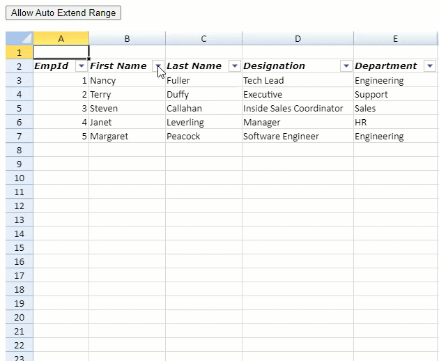

SpreadJS allows you to perform various operations on row filters.
Create Custom Filter
You can create and add a custom filter item to the row filter.
The following code example shows how to create a custom filter which only displays numerical ranging from 10 to 50.
| JavaScript |
Copy Code
|
|---|---|
//Create a custom condition. function CustomFilter(){ GC.Spread.Sheets.ConditionalFormatting.Condition.apply(this, arguments); //this.conditionType("CustomFilter"); }; CustomFilter.prototype = new GC.Spread.Sheets.ConditionalFormatting.Condition(); CustomFilter.prototype.evaluate = function (evaluator, row, col) { var value = evaluator.getValue(row, col); if (value !== null && value >= 10 && value <= 50) { //Return True only when the following conditions are satisfied. // (1)Values are entered. // (2)Values are not lower than 10. // (3)Values are not greater than 50. return true; } else { return false; } }; // Configure Workbook and Worksheet var spread = new GC.Spread.Sheets.Workbook(document.getElementById("ss")); var activeSheet = spread.getActiveSheet(); activeSheet.setValue(0, 0, 10); activeSheet.setValue(1, 0, 100); activeSheet.setValue(2, 0, 50); activeSheet.setValue(3, 0, 40); activeSheet.setValue(4, 0, 80); activeSheet.setValue(5, 0, 1); activeSheet.setValue(6, 0, 65); activeSheet.setValue(7, 0, 20); activeSheet.setValue(8, 0, 30); activeSheet.setValue(9, 0, 35); //Set a row Filter. var rowFilter = new GC.Spread.Sheets.Filter.HideRowFilter(new GC.Spread.Sheets.Range(0, 0, 7, 1)); activeSheet.rowFilter(rowFilter); rowFilter.addFilterItem(0, new CustomFilter()); rowFilter.filter(0); |
|
Get Row Filter Status
You can get various row filter status by using RowFilterBase class methods such as isFiltered, isRowFilteredOut, onFilter, and so on.
The following code example shows a button set to indicate whether any row or column has been filtered.
| JavaScript |
Copy Code
|
|---|---|
$("#button1").click(function() { var rowFilter = spread.getActiveSheet().rowFilter(); if (rowFilter.isFiltered(0)) { console.log("Row-filtering executed for Column1"); } else { console.log("Row-filtering not executed for Column1"); } }) |
|
Get Row Filter Results
You can get filter items and show results using RowFilterBase class methods such as getFilterItems.
The following code example shows how to get filter results on a browser console.
| JavaScript |
Copy Code
|
|---|---|
$("#button1").click(function () { var rowFilter = spread.getActiveSheet().rowFilter(); //********************************************* // Exit if Column1 has not been filtered. //********************************************* if (!rowFilter.isFiltered(0)) { return; } //********************************************* // Filtered strings //********************************************* var filterItems = rowFilter.getFilterItems(0); var str = "Filtered strings:"; filterItems.forEach(function (item) { str += " " + item.expected(); }) console.log(str); console.log(""); //********************************************* // Number of Filtered-In (displayed) rows //********************************************* var range = rowFilter.range; var filteredInRows = [], filteredOutRows = []; for (var i = range.row, last = range.row + range.rowCount; i < last; i++) { if (rowFilter.isRowFilteredOut(i)) { filteredOutRows.push(i); } else { filteredInRows.push(i); } } console.log("Number of Filtered-In (displayed) rows: " + filteredInRows.length); console.log(""); // ********************************************* // Number of Filtered-Out (hidden) rows // ********************************************* console.log("Number of Filtered-Out (hidden) rows: " + filteredOutRows.length); console.log(""); filteredOutRows.forEach(function(item){ console.log("Filtered-Out (hidden) row index: " + item); }); console.log(""); //********************************************* //Filtered-In (displayed)/Filtered-Out (hidden) rows //********************************************* filteredOutRows.forEach(function(item){ console.log("Data of Filtered-Out (hidden) row: " + activeSheet.getValue(item, 0)); }); console.log(""); filteredInRows.forEach(function(item) { console.log("Data of Filtered-In (displayed) row: " + activeSheet.getValue(item, 0)); }); }); |
|
Hide Filter Indicator
You can choose whether to display the filter indicator using the RowFilterBase.filterButtonVisible method. Set it to false to hide the filter indicator otherwise it is true by default.
The following code example shows how to hide or show filter indicator with a dedicated button.
| JavaScript |
Copy Code
|
|---|---|
$("#button1").click(function() { // Hide the filter indicator. var rowFilter = spread.getActiveSheet().rowFilter(); rowFilter.filterButtonVisible(0, false); activeSheet.repaint(); }); $("#button2").click(function() { // Display the filter indicator again. var rowFilter = spread.getActiveSheet().rowFilter(); rowFilter.filterButtonVisible(0, true); activeSheet.repaint(); }); |
|
Auto Extend Filter Range
You can choose whether to extend the filter range beyond the original filter range in SpreadJS.
The allowAutoExtendFilterRange property, when set to true, extends the filter range until any non-empty cells are encountered either in the same or adjacent columns. By default, the property is set to false.
You can also fetch the extended filter range by using the rowFilter's extendedRange property which returns an array. If the allowAutoExtendFilterRange property is set to false, then the extendedRange value is the same as GC.Spread.Sheets.Filter.RowFilterBase.range.
The following GIF and the corresponding code example illustrate the usage of the extended filter range and fetch the extended range from the worksheet.

| JavaScript |
Copy Code
|
|---|---|
function AllowAutoExtend(spread, rowFilter) { // set allowAutoExtendFilterRange to true spread.options.allowAutoExtendFilterRange = true; // to get the extended range var extendedFilterRange = rowFilter.extendedRange; // it will return - row: 2, rowCount: 5, col: 0, colCount: 5 } |
|
Note: This property is set to true when importing an Excel file containing a filter.
The table below depicts the different scenarios that can be observed when the auto-extend filter range is set to true.
| Scenario | Example |
|---|---|
| When a filter is created and only a single cell is selected, SpreadJS will extend the filter range until the cells around the range are all empty. | |
| After a filter is created, SpreadJS extends the filter range below the original value until there is a null value. | |
| If a value is deleted from one of the extended filter range cells, the filter list is updated. | |
| If a value is deleted from the base filter range cells, a blank is shown in the filter list. | |
| If multiple column filters are created, SpreadJS auto-extends the filter range until the row where the value of each column is null. |  |